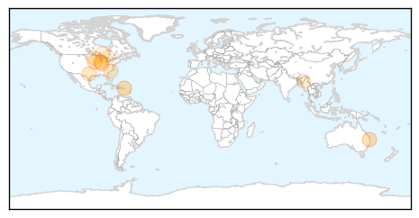

30 Day Trends
Web: 0 alerts, 0 warnings
Twitter: 0 alerts, 0 warnings
Top Articles:
- 0.974
- Health officials keeping close eye on dog flu
- 0.933
- Federal Health Minister urges people to get their flu shots
- 0.860
- Dog owners in Chicago suburbs beware -- Canine flu virus reaches McHenry County
- 0.825
- Nation's No. 1 egg-producing state aims to keep bird flu out
- 0.803
- College of Veterinary Medicine implements precautions for open house Saturday (April 18) due to canine influenza
- 0.751
- April 18, 2015 Archives
- 0.702
- Vets predict canine influenza outbreak will spread to SC
- 0.577
- It is confirmed ... Bird Flu has landed here
- 0.556
- Avian flu mystery has turkey farmers on edge
- 0.523
- Avian influenza confirmed on second farm in Southern Ontario
- 0.522
- Rainfall Special Weather Statement ends
Top Tweets:
-
No tweets found for Apr 19, 2015
Web/News Articles

Tweets

Article Locations
Article Confidences